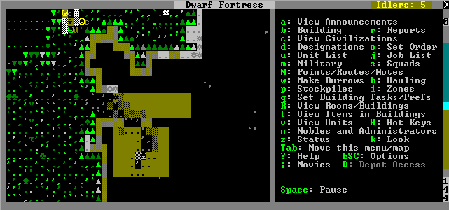

Dwarf Fortress and multilib on Exherbo
by Clément Delafargue on January 8, 2013
Tagged as: sysadmin, exherbo, dwarf fortress.
A few months ago, I’ve played a bit with Dwarf Fortress. It’s a rogue-like game where you manage a settlement of Dwarves. This game is legendary thanks to its complexity and its difficulty. I strongly encourage you to give it a go.
The only problem is that it’s distributed as a 32 bit binary, which is a bit tedious to run on a 64bit system. Making it run on my exherbo led me to do some interesting things with my system, ultimately making my first contribution to Exherbo. In the process, I’ve witnessed again how powerful exherbo and paludis are.
Switching to multibuild
The distros handles it differently. In Debian, some 32bit libs are bundled in a dedicated package (for instance in Debian, it’s ia32libs). If the lib you need is not in this package, well you’ll have to put it manually. In Fedora, it’s a bit cleaner, just install <package name>.i386 to get the 32bit version.
Even though Gentoo is a source-based distro, it does not provide a dramatic improvement in terms of flexibility. 32bit libs are available as different packages (for instance emul-linux-x86-gtklibs). A bit better than a monolithic package à la Debian, but still kludgy. Since the source code is the same, it’s a bit sad to duplicate packages.
Ideally, multibuild should be integrated smoothly in the package manager. Building a lib in 32bit or 64bit should be as easy as enabling or disabling a build option. Turns out exherbo does just that :)
In exherbo, you can ask a package to be built twice: one time as 32bit, one time as 64bit. The compiled libs will then be stored in /usr/lib32 and /usr/lib64. All you have to do is add multibuild_c: 32 to the package options.
Multibuild core system
The first step is to switch the core of your system to multibuild (change the directory structure, and recompile gcc and glibc).
It’s explained here: http://www.mailstation.de/wordpress/?p=118
This step takes some time. Bootstrap-compiling glibc and gcc on my machine took a few hours.
Libraries
To see which libs Dwarf Fortress is linked against, use ldd-tree or just try to run it.
The rest is just a matter of adding multibuild_c: 32 to the missing lib, trying to resolve it, gathering its dependencies in the error report, switching these dependencies to multibuild, and iterating.
If this seems tedious, it’s because it is. However the pain can be greatly mitigated with a bit of vim-fu.
The first iteration (dependents of SDL) made me re-compile most of my core system packages, which introduced a circular dependency between systemd, dbus and util-linux (through udev). In this case, the solution is to temporarily disable flags, break the circle, put the flags on and compile again.
After a few iterations, I was left with only two missing libs.
Patching packages
Unfortunately, two libraries were not packaged with support of multibuild (this is quite a recent change), SDL_ttf and SDL_image. One lib was easy to patch, the other one demanded some extra work.
The easy one
Patching SDL_image’s exheres was just a matter of declaring the fact that this lib was buildable as a 32bit binary or a 64bit binary (the MYOPTIONS part), and requiring the dependencies to have the same multibuild setup.
--- a/packages/media-libs/SDL_image/SDL_image-1.2.12.exheres-0
+++ b/packages/media-libs/SDL_image/SDL_image-1.2.12-r1.exheres-0
@@ -1,7 +1,7 @@
# Copyright 2009 Maxime Coste <frrrwww@gmail.com>
# Distributed under the terms of the GNU General Public License v2
-require SDL_lib
+require SDL_lib easy-multibuild
SUMMARY="Image file loading library for SDL"
@@ -11,17 +11,18 @@ PLATFORMS="~amd64 ~x86"
MYOPTIONS="
tiff
webp [[ description = [ Support for the WebP image format ] ]]
+ multibuild_c: 32 64
"
DEPENDENCIES="
build:
virtual/pkg-config[>=0.9.0]
build+run:
- media-libs/SDL[>=1.2.10]
- media-libs/jpeg
- media-libs/libpng
- tiff? ( media-libs/tiff )
- webp? ( media-libs/libwebp )
+ media-libs/SDL[>=1.2.10][multibuild_c:*(-)?]
+ media-libs/jpeg[multibuild_c:*(-)?]
+ media-libs/libpng[multibuild_c:*(-)?]
+ tiff? ( media-libs/tiff[multibuild_c:*(-)?] )
+ webp? ( media-libs/libwebp[multibuild_c:*(-)?] )
"The hard one
Patching SDL_ttf was a tad harder: at some time during the compilation of the 32bit binary, the build process tried to link with a dependency… in /usr/lib32/. Instead of using pkg-config to retrieve the libs folder, the .configure used sdl-config which always returned /usr/lib64/.
Workflow
I’ve read carefully Keruspe’s blog posts (Contributing to Exherbo and The path to upstream) as well as Exherbo’s resources, Exheres for smarties and Contributing. The workflow is surprisingly light. Exherbo’s conflation between users and contributors really shines there. The workflow is entirely based on the standard system tools.
Running an Exherbo is not always for the faint-hearted, requires care and some extra work from time to time, but gives in return the cleanest system I’ve ever had. The toolset which is available allows users to handle cleanly virtually any case. Marc Antoine has been of tremendous help on this one :)
I’ve recently bought a Raspberry Pi and I put Raspbian on it. Using a binary distro made me realize how much a clean distro allows you to control your system. There is some work on a multiarch setup which would allow me to have a clean cross-compilation chain for my Raspberry Pi. I’m eager to test it :)
Now, strike the earth !
